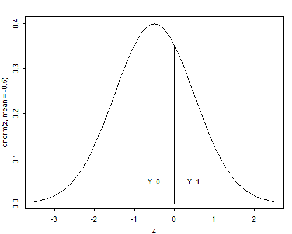
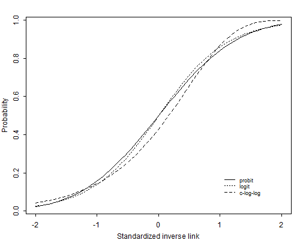

All the models considered so far use the logit transformation of the probabilities, but other choices are possible. In fact, any transformation that maps probabilities into the real line could be used to produce a generalized linear model, as long as the transformation is one-to-one, continuous and differentiable.
In particular, suppose \( F(.) \) is the cumulative distribution function (c.d.f.) of a random variable defined on the real line, and write
\[ \pi_i = F(\eta_i), \]for \( -\infty < \eta_i < \infty \). Then we could use the inverse transformation
\[ \eta_i = F^{-1}(\pi_i), \]for \( 0 < \pi_i < 1 \) as the link function.
Popular choices of c.d.f.’s in this context are the normal, logistic and extreme value distributions. In this section we motivate this general approach by introducing models for binary data in terms of latent variables.
Let \( Y_i \) denote a random variable representing a binary response coded zero and one, as usual. We will call \( Y_i \) the manifest response. Suppose that there is an unobservable continuous random variable \( Y^*_i \) which can take any value in the real line, and such that \( Y_i \) takes the value one if an only if \( Y^*_i \) exceeds a certain threshold \( \theta \). We will call \( Y^*_i \) the latent response. Figure 3.6 shows the relationship between the latent variable and the response when the threshold is zero.
Figure 3.6 Latent Variable and Manifest Response
The interpretation of \( Y_i \) and \( Y^*_i \) depends on the context. An economist, for example, may view \( Y_i \) as a binary choice, such as purchasing or renting a home, and \( Y^*_i \) as the difference in the utilities of purchasing and renting. A psychologist may view \( Y_i \) as a response to an item in an attitude scale, such as agreeing or disagreeing with school vouchers, and \( Y^*_i \) as the underlying attitude. Biometricians often view \( Y^*_i \) as a dose and \( Y_i \) as a response, hence the name dose-response models.
Since a positive outcome occurs only when the latent response exceeds the threshold, we can write the probability \( \pi_i \) of a positive outcome as
\[ \pi_i = \Pr\{Y_i = 1\} = \Pr\{Y^*_i > \theta \}. \]As often happens with latent variables, the location and scale of \( Y^*_i \) are arbitrary. We can add a constant \( a \) to both \( Y^*_i \) and the threshold \( \theta \), or multiply both by a constant \( c \), without changing the probability of a positive outcome. To identify the model we take the threshold to be zero, and standardize \( Y^*_i \) to have standard deviation one (or any other fixed value).
Suppose now that the outcome depends on a vector of covariates \( \boldsymbol{x} \). To model this dependence we use an ordinary linear model for the latent variable, writing
\[\tag{3.15}Y^*_i = \boldsymbol{x}_i'\boldsymbol{\beta} + U_i,\]where \( \boldsymbol{\beta} \) is a vector of coefficients of the covariates \( \boldsymbol{x}_i \) and \( U_i \) is the error term, assumed to have a distribution with c.d.f. \( F(u) \), not necessarily the normal distribution.
Under this model, the probability \( \pi_i \) of observing a positive outcome is
\[\tag{3.16}\begin{eqnarray*}\pi_i &=& \Pr\{ Y_i > 0 \}\ &=& \Pr\{ U_i > -\eta_i \} \ &=& 1 - F(-\eta_i),\end{eqnarray*}\]where \( \eta_i = \boldsymbol{x}_i'\boldsymbol{\beta} \) is the linear predictor. If the distribution of the error term \( U_i \) is symmetric about zero, so \( F(u) = 1-F(-u) \), we can write
\[ \pi_i=F(\eta_i) \]This expression defines a generalized linear model with Bernoulli response and link
\[\tag{3.17}\eta_i = F^{-1}(\pi_i).\]In the more general case where the distribution of the error term is not necessarily symmetric, we still have a generalized linear model with link
\[\tag{3.18}\eta_i = - F^{-1}(1-\pi_i).\]We now consider some specific distributions.
The obvious choice of an error distribution is the normal. Assuming that the error term has a standard normal distribution \( U_i \sim N(0,1) \), the results of the previous section lead to
\[ \pi_i = \Phi(\eta_i), \]where \( \Phi \) is the standard normal c.d.f. The inverse transformation, which gives the linear predictor as a function of the probability
\[ \eta_i = \Phi^{-1}(\pi_i), \]is called the probit.
It is instructive to consider the more general case where the error term \( U_i \sim N(0,\sigma^2) \) has a normal distribution with variance \( \sigma^2 \). Following the same steps as before we find that
\[ \begin{array}{ll} \pi_i &= \Pr\{ Y^*_i > 0 \}\\ &=\Pr\{U_i > -\boldsymbol{x}_i'\boldsymbol{\beta}\} = \Pr\{U_i/\sigma > -\boldsymbol{x}_i'\boldsymbol{\beta}/\sigma\}\\ &= 1-\Phi(-\boldsymbol{x}_i'\boldsymbol{\beta}/\sigma) = \Phi(\boldsymbol{x}_i'\boldsymbol{\beta}/\sigma), \end{array} \]where we have divided by \( \sigma \) to obtain a standard normal variate, and used the symmetry of the normal distribution to obtain the last result.
This development shows that we cannot identify \( \boldsymbol{\beta} \) and \( \sigma \) separately, because the probability depends on them only through their ratio \( \boldsymbol{\beta}/\sigma \). This is another way of saying that the scale of the latent variable is not identified. We therefore take \( \sigma=1 \), or equivalently interpret the \( \beta \)’s in units of standard deviation of the latent variable.
As a simple example, consider fitting a probit model to the contraceptive use data by age and desire for more children. In view of the results in Section 3.5, we introduce a main effect of wanting no more children, a linear effect of age, and a linear age by desire interaction. Fitting this model gives a deviance of 8.91 on four d.f. Estimates of the parameters and standard errors appear in Table 3.16
Table 3.16. Estimates for Probit Model of Contraceptive Use
With a Linear Age by Desire Interaction
| Parameter | Symbol | Estimate | Std. Error | \(z\)-ratio |
| Constant | \(\alpha_1\) | \(-\)0.7297 | 0.0460 | \(-\)15.85 |
| Age | \(\beta_1\) | 0.0129 | 0.0061 | 2.13 |
| Desire | \(\alpha_2-\alpha_1\) | 0.4572 | 0.0731 | 6.26 |
| Age \(\times\) | ||||
| Desire | \(\beta_2-\beta_1\) | 0.0305 | 0.0092 | 3.32 |
To interpret these results we imagine a latent continuous variable representing the woman’s motivation to use contraception (or the utility of using contraception, compared to not using). At the average age of 30.6, not wanting more children increases the motivation to use contraception by almost half a standard deviation. Each year of age is associated with an increase in motivation of 0.01 standard deviations if she wants more children and 0.03 standard deviations more (for a total of 0.04) if she does not. In the next section we compare these results with logit estimates.
A slight disadvantage of using the normal distribution as a link for binary response models is that the c.d.f. does not have a closed form, although excellent numerical approximations and computer algorithms are available for computing both the normal probability integral and its inverse, the probit.
An alternative to the normal distribution is the standard logistic distribution, whose shape is remarkably similar to the normal distribution but has the advantage of a closed form expression
\[ \pi_i = F(\eta_i) = \frac{ e^{\eta_i} } { 1 + e^{\eta_i } }, \]for \( -\infty < \eta_i < \infty \). The standard logistic distribution is symmetric, has mean zero, and has variance \( \pi^2/3 \). The shape is very close to the normal, except that it has heavier tails. The inverse transformation, which can be obtained solving for \( \eta_i \) in the expression above is
\[ \eta_i = F^{-1}(\pi_i)= \log\frac{\pi_i}{1-\pi_i}, \]our good old friend, the logit.
Thus, coefficients in a logit regression model can be interpret not only in terms of log-odds, but also as effects of the covariates on a latent variable that follows a linear model with logistic errors.
The logit and probit transformations are almost linear functions of each other for values of \( \pi_i \) in the range from 0.1 to 0.9, and therefore tend to give very similar results. Comparison of probit and logit coefficients should take into account the fact that the standard normal and the standard logistic distributions have different variances. Recall that with binary data we can only estimate the ratio \( \boldsymbol{\beta}/\sigma \). In probit analysis we have implicitly set \( \sigma=1 \). In a logit model, by using a standard logistic error term, we have effectively set \( \sigma=\pi/\sqrt{3} \). Thus, coefficients in a logit model should be standardized dividing by \( \pi/\sqrt{3} \) before comparing them with probit coefficients.
Figure 3.7 The Standardized Probit, Logit and C-Log-Log Links
Figure 3.7 compares the logit and probit links (and a third link discussed below) after standardizing the logits to unit variance. The solid line is the probit and the dotted line is the logit divided by \( \pi/\sqrt{3} \). As you can see, they are barely distinguishable.
To illustrate the similarity of these links in practice, consider our models of contraceptive use by age and desire for more children in Tables 3.10 and 3.16. The deviance of 9.14 for the logit model is very similar to the deviance of 8.91 for the probit model, indicating an acceptable fit. The Wald tests of individual coefficients are also very similar, for example the test for the effect of wanting no more children at age 30.6 is 6.22 in the logit model and 6.26 in the probit model. The coefficients themselves look somewhat different, but of course they are not standardized. The effect of wanting no more children at the average age is 0.758 in the logit scale. Dividing by \( \pi/\sqrt{3} \), the standard deviation of the underlying logistic distribution, we find this effect equivalent to an increase in the latent variable of 0.417 standard deviations. The probit analysis estimates the effect as 0.457 standard deviations.
A third choice of link is the complementary log-log transformation
\[ \eta_i = \log (-\log(1-\pi_i)), \]which is the inverse of the c.d.f. of the extreme value (or log-Weibull) distribution, with c.d.f.
\[ F(\eta_i) = 1 - e^{-e^{\eta_i}}. \]For small values of \( \pi_i \) the complementary log-log transformation is close to the logit. As the probability increases, the transformation approaches infinity more slowly that either the probit or logit.
This particular choice of link function can also be obtained from our general latent variable formulation if we assume that \( -U_i \) (note the minus sign) has a standard extreme value distribution, so the error term itself has a reverse extreme value distribution, with c.d.f.
\[ F(U_i) = e^{-e^{-U_i}}. \]The reverse extreme value distribution is asymmetric, with a long tail to the right. It has mean equal to Euler’s constant \( 0.577 \) and variance \( \pi^2/6=1.645 \). The median is \( -\log\log 2=0.367 \) and the quartiles are \( -0.327 \) and \( 1.246 \).
Inverting the reverse extreme value c.d.f. and applying Equation 3.18, which is valid for both symmetric and asymmetric distributions, we find that the link corresponding to this error distribution is the complementary log-log.
Thus, coefficients in a generalized linear model with binary response and a complementary log-log link can be interpreted as effects of the covariates on a latent variable which follows a linear model with reverse extreme value errors.
To compare these coefficients with estimates based on a probit analysis we should standardize them, dividing by \( \pi/\sqrt{6} \). To compare coefficients with logit analysis we should divide by \( \sqrt{2} \), or standardize both c-log-log and logit coefficients.
Figure 3.7 compares the c-log-log link with the probit and logit after standardizing it to have mean zero and variance one. Although the c-log-log link differs from the other two, one would need extremely large sample sizes to be able to discriminate empirically between these links.
The complementary log-log transformation has a direct interpretation in terms of hazard ratios, and thus has practical applications in terms of hazard models, as we shall see later in the sequel.